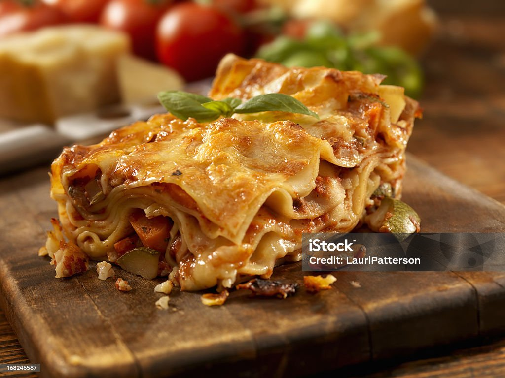

Lasagna

Description
A lasagna dish is a rich, layered baked pasta that combines comfort and flavor in every bite. It typically consists of wide, flat lasagna noodles arranged in alternating layers with hearty fillings. The most classic version includes layers of:
Ingredients
Main ingredients
- Lasagna noodles (about 12 sheets, regular or oven-ready)
- Ground beef (1 lb, or a mix of beef and pork)
- Olive oil (1-2 tbsp)
- Onion (1 medium, finely chopped)
- Garlic (2-3 cloves, minced)
- Tomato sauce (2 cups)
- Tomato paste (2 tbsp)
- Crushed tomatoes (1 can, 28 oz)
- Italian seasoning (1 tbsp, or mix of basil, oregano, thyme)
- Salt and black pepper (to taste)
- Sugar (1 tsp, optional, to balance acidity)
Cheese Layer
- Ricotta cheese (15 oz)
- Mozzarella cheese (2 cups, shredded)
- Parmesan cheese (½ cup, grated)
- Egg (1 large, to bind ricotta)
- Parsley (2 tbsp, chopped, fresh or dried)
Optional aditions
- Red pepper flakes (for heat)
- Spinach or zucchini (for added vegetables)
- Béchamel sauce (for creamier texture)
Cooking Steps
- Preheat the oven to 375°F (190°C).
- Bring a large pot of salted water to a boil.
- Cook the lasagna noodles according to package directions until al dente.
- Drain and lay them flat on parchment paper to prevent sticking.
- In a large skillet, heat olive oil over medium heat.
- Add chopped onion and cook until soft, about 3-4 minutes.
- Add minced garlic and cook for another 30 seconds.
- Add ground beef (or beef and pork mix).
- Cook until browned, breaking it apart with a spoon.
- Drain excess fat if necessary.
- Stir in tomato sauce, tomato paste, crushed tomatoes, Italian seasoning, salt, pepper, and sugar.
- Simmer uncovered for 15-20 minutes, stirring occasionally.
- In a bowl, combine ricotta cheese, egg, parsley, and half of the Parmesan cheese.
- Mix well to create the cheese filling.
- Spread a thin layer of the meat sauce on the bottom of a 9x13-inch baking dish.
- Place a layer of noodles over it.
- Add a layer of the ricotta mixture, then some mozzarella, and more meat sauce.
- Repeat the layers until all ingredients are used, finishing with meat sauce and mozzarella on top.
- Cover with aluminum foil (spray the underside with oil to prevent sticking).
- Bake for 25 minutes.
- Remove the foil and bake for another 20-25 minutes, until the top is golden and bubbly.
- Let it rest for at least 10-15 minutes before slicing and serving.